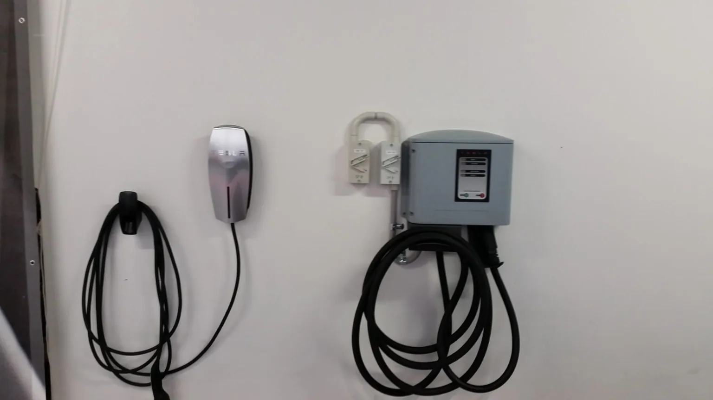
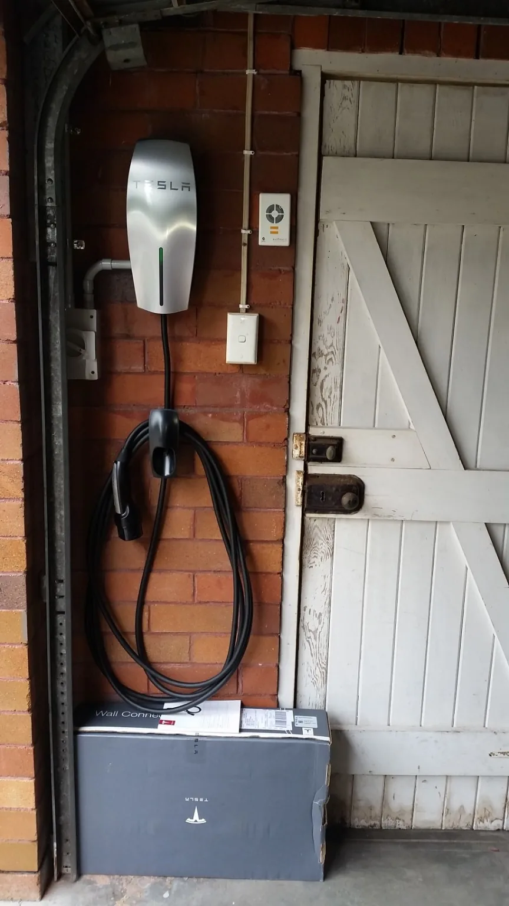
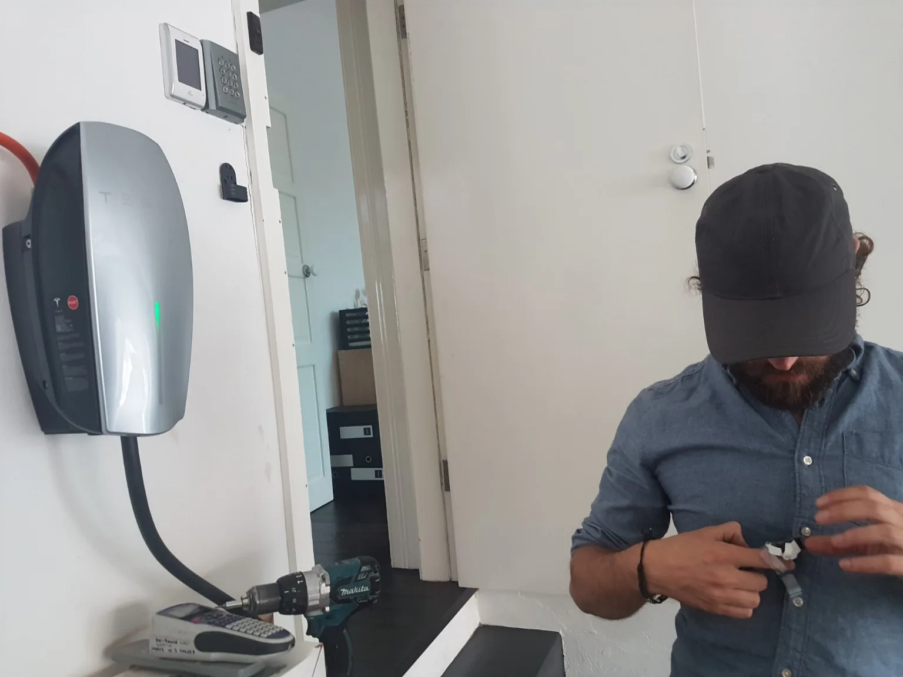
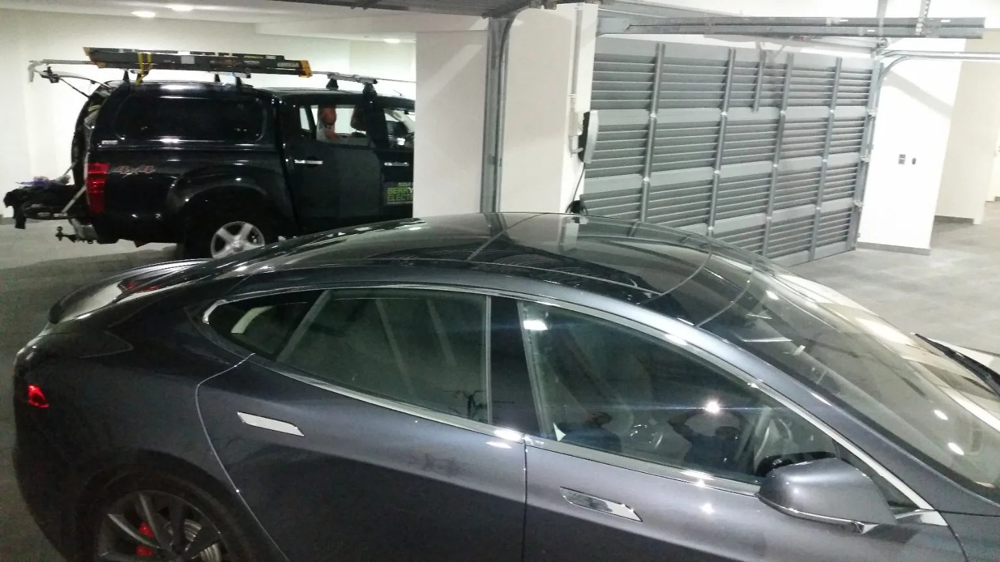
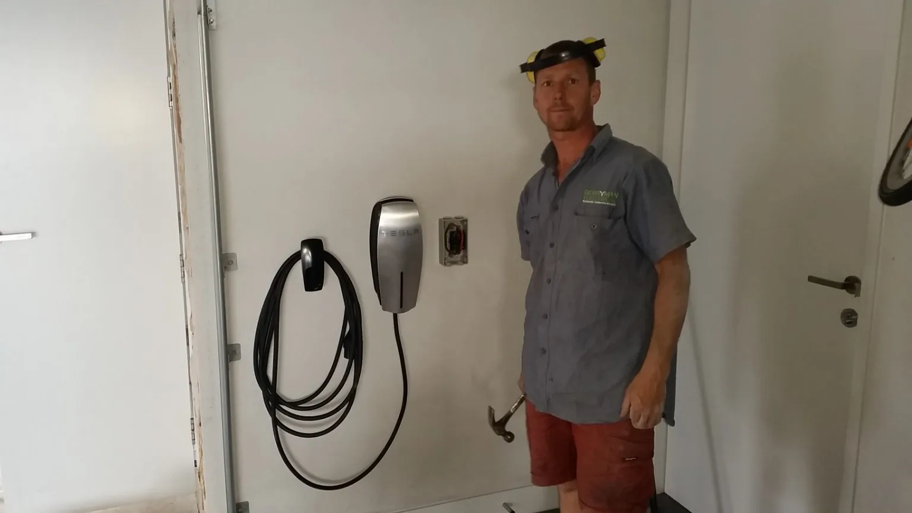
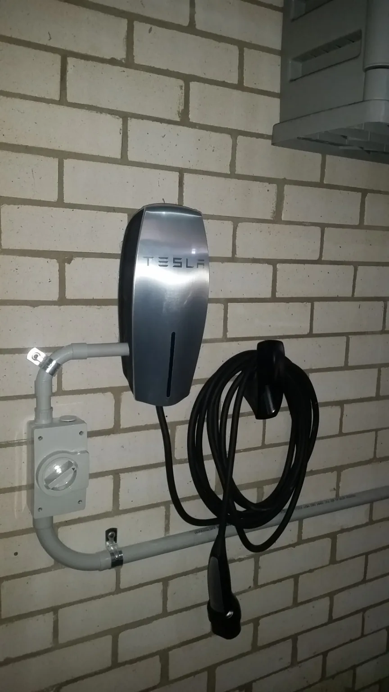

Plan the charger around the property, not just the car.
A good EV charger installation considers the switchboard, available supply, cable route, protection, parking position and how the charger will be used before installation starts.
What this service covers.
Home charging
Dedicated charging installations planned around the garage, carport or parking position.
Workplace charging
Practical charging options for businesses where site layout and electrical capacity need to be considered.
Switchboard assessment
Check whether existing protection and available capacity suit the proposed charger.
Cable route planning
Choose a sensible route that balances installation quality, access and future maintenance.
EV charging experience that goes back years.
These are genuine Berryman Electrical installation photos from earlier Tesla Wall Connector projects. The hardware has evolved, but the fundamentals have not: assess the supply and switchboard, plan the cable route, install the correct protection and leave the charging point neat and practical to use.

Plan the charger around the garage and the car.
A charger needs to work with where the vehicle actually parks, how the lead reaches the car, and the route back to the switchboard. The cleanest installation is usually the one planned properly before the cable goes in.
Genuine Berryman Electrical EV charging work. Earlier-generation Tesla hardware shown.





Common questions.
Can any house have an EV charger?
Most installations are possible, but the existing supply, switchboard, cable route and charger requirements need to be assessed first.
Do I need a switchboard upgrade as well?
Not always. The switchboard should be assessed as part of planning the charger.
Can I send a photo of the switchboard and parking spot?
Yes. Those two photos are particularly useful for an initial EV-charger enquiry.
EV Charger Installation across Byron Bay and nearby Northern Rivers.
This service is available across the main Berryman Electrical service area, including the locations below.